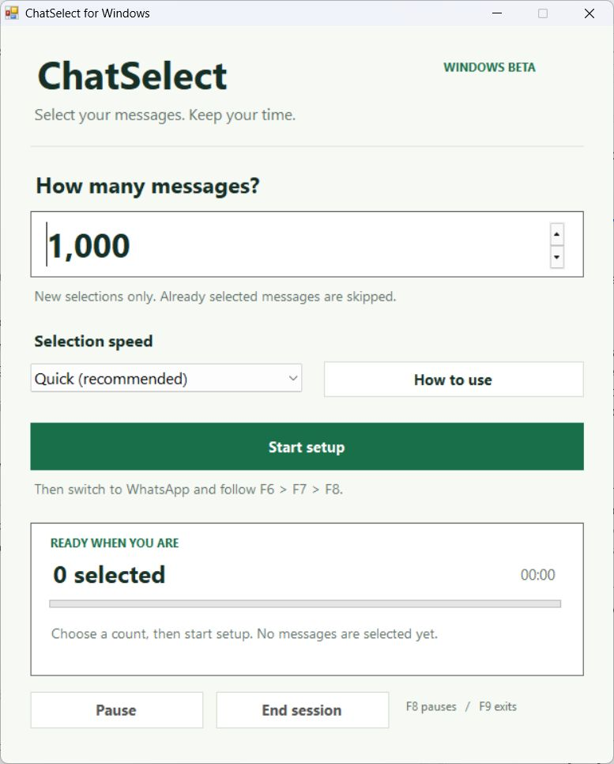
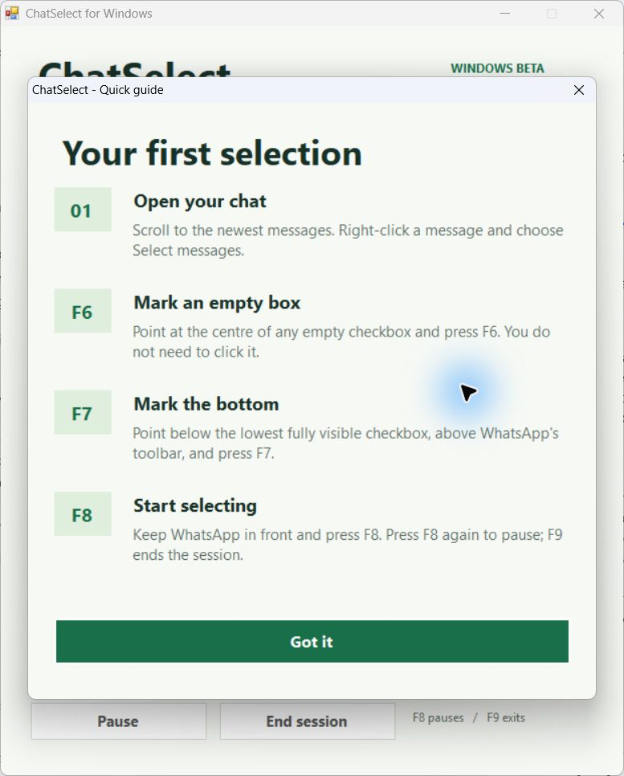

Choose how many
Download and extract the ZIP. Open ChatSelect.exe, enter the number of new messages you want, and click Start setup.
Start with 100 for your first run.ChatSelect is a free Windows utility that selects WhatsApp messages for you. Choose a count, follow the setup guide, and review your selection.
Free beta · No account needed · Windows desktop only
You stay in control.
ChatSelect selects messages. You decide what to do next.

A minute to get started
Open WhatsApp in light mode and keep its window visible while ChatSelect runs.
Download and extract the ZIP. Open ChatSelect.exe, enter the number of new messages you want, and click Start setup.
Start with 100 for your first run.In WhatsApp, scroll to your newest messages. Right-click a message and choose Select messages.
Keep WhatsApp in front and press F8. ChatSelect selects messages and scrolls upward until it reaches your count.
When it finishes, review the selection and choose your next action in WhatsApp.

A good first run
01Count new selections. Already selected messages are skipped. Clear them first if you want an exact final total.
02Keep WhatsApp in view. Switching to another app pauses selection. Return to WhatsApp and press F8 to continue.
03Keep the window in place. If you move or resize WhatsApp, repeat F6 and F7 before resuming.
Good to know
Open ChatSelect, choose a message count, and click Start setup. In WhatsApp, open your chat in Select messages mode. Mark an empty checkbox with F6, mark the bottom boundary with F7, then press F8 to start. Review the selected messages when it finishes.
No. It selects messages and scrolls through your chat. You choose the next action in WhatsApp after reviewing the selection.
Keep WhatsApp in front and avoid moving your mouse. Switching to another app pauses selection. Go back to WhatsApp and press F8 to resume.
This beta is for Windows desktop with WhatsApp in light mode. It has been tested on one Windows setup; compatibility across Windows 10 and 11 still needs wider testing. Mac, phones and dark mode are not supported by this release.
ChatSelect waits for older messages to load. If a box moves before it is clicked, it waits four seconds and tries a fresh scan automatically. If a selection cannot be confirmed, it pauses so you can check your chat.
No. ChatSelect runs on your computer without a sign-in or chat upload. Screen images are processed in memory and are not saved as pictures. Progress and timing files stay on your computer.
In our initial Windows tests, selecting 1,000 messages took about four to five minutes of active time. Your speed depends on message sizes, loading and your computer. The app displays your selection count and elapsed time.
No. ChatSelect is an independent beta utility, not affiliated with WhatsApp or Meta. Review your selected messages before taking an action.
Choose a count. Follow the guide. Review your messages.
Download for WindowsFree ZIP download · Extract, then open ChatSelect.exe